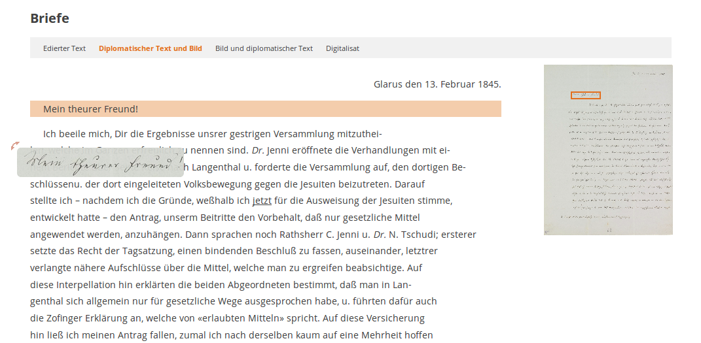
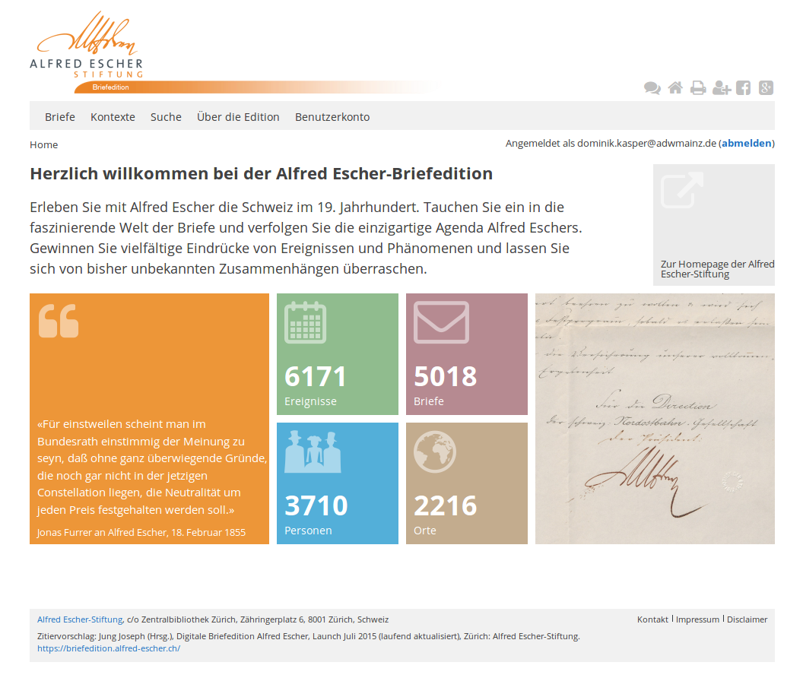
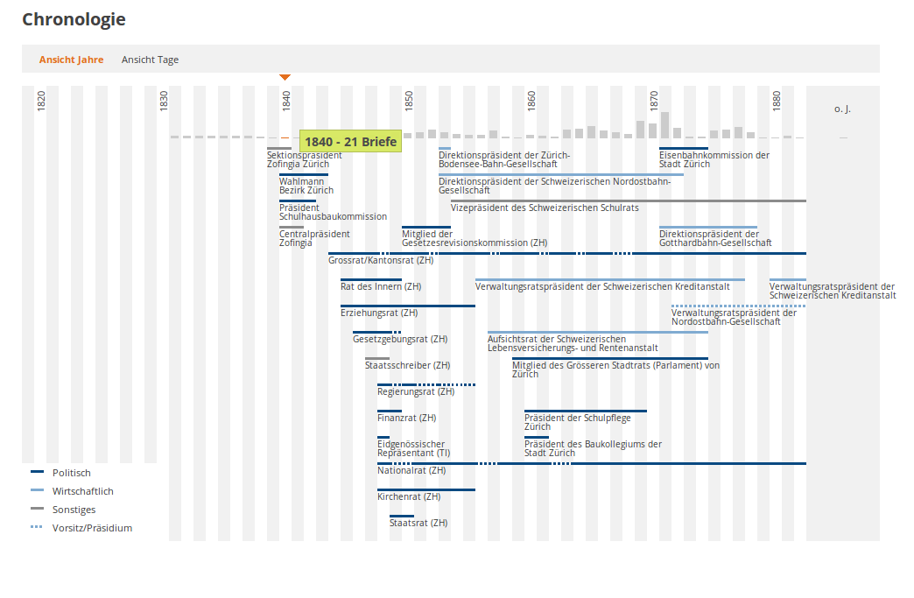
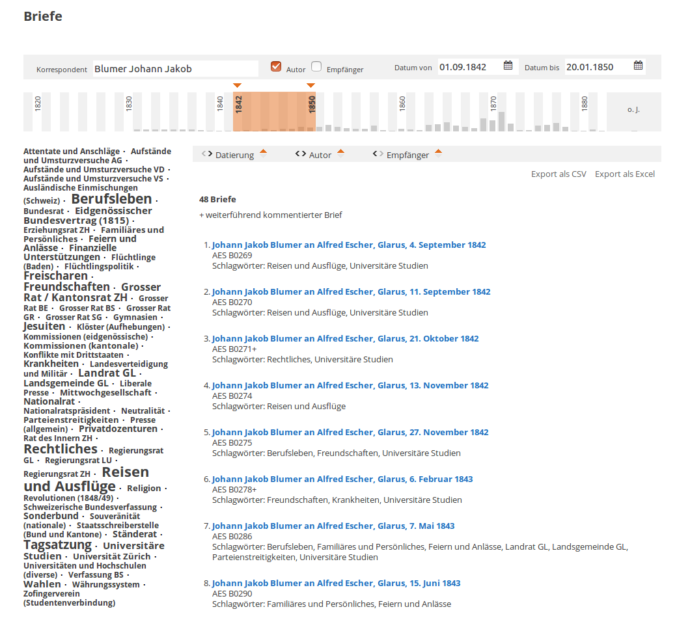
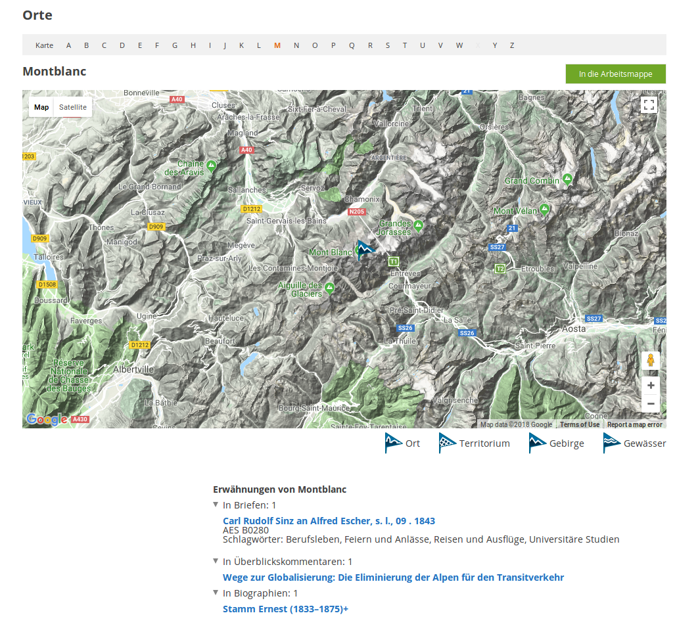
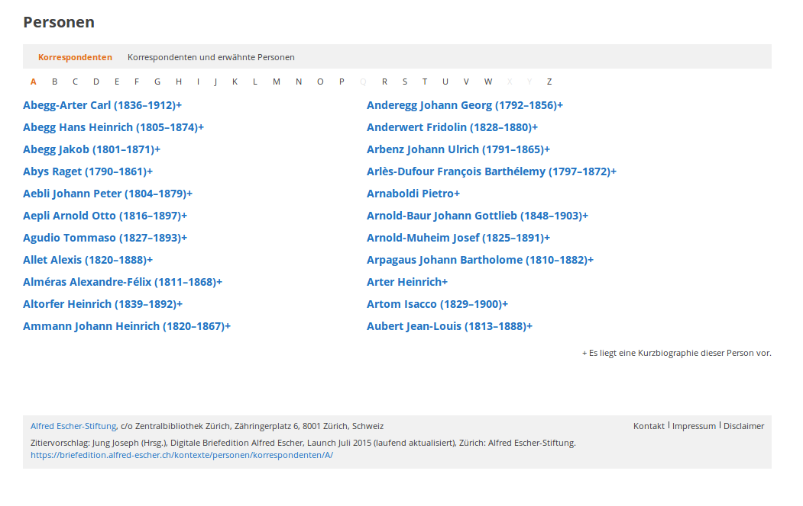
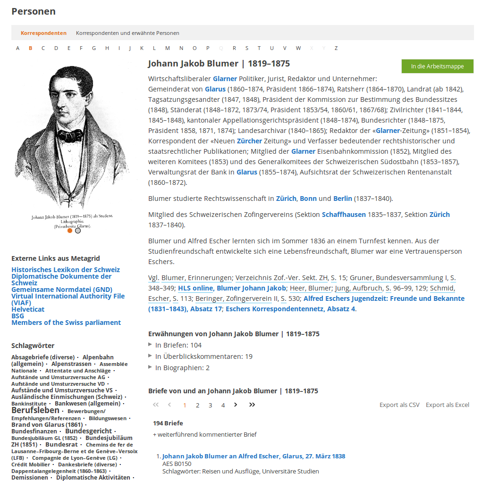
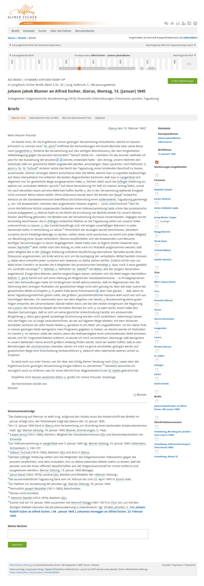
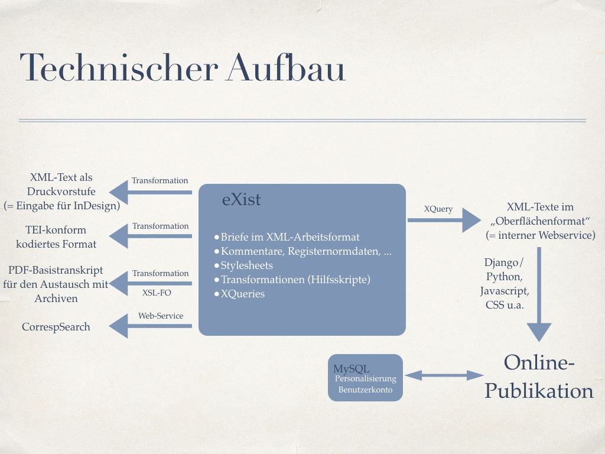
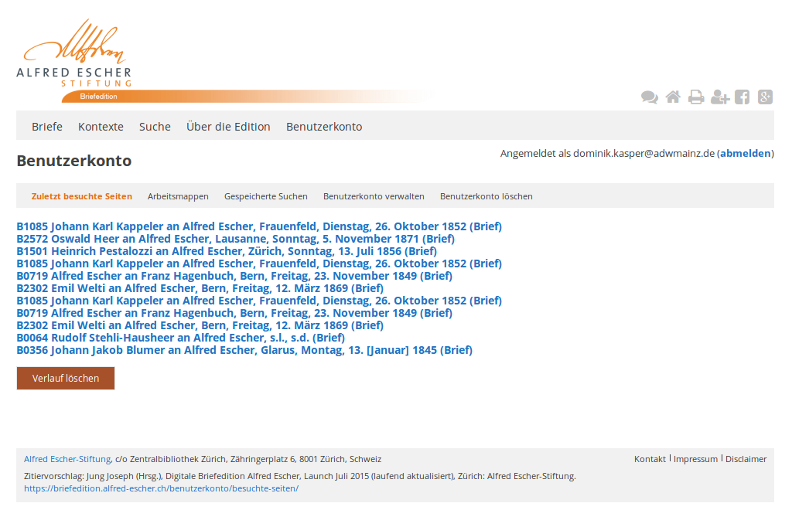

Rezension der „Alfred-Escher-Briefedition“
Table of Contents
Abstract
Based on letters from politician and industrialist Alfred Escher (1819–1882), an important protagonist of Modern Swiss history, and his correspondents, the Alfred Escher-Briefedition offers central insight into the economic and political history of Switzerland during the 19th century. At the same time, it reflects the personal development of Alfred Escher himself. Most of the letters, which he sent or which were addressed to him, are being published for the first time in this scholarly edition. Escher’s correspondence is explored via editorial comments about specific subjects, as well as an index of persons and places. Extensive commentaries facilitate the placement of a respective source text in its broader historical context. Whereas only a selection of the letters written by and sent to Escher was presented within a chronological thematic arrangement in the six volumes of the 2008–2015 print edition, it is worth mentioning that the continuously expanded online version, published since July 1st 2015, subsequently closes the gap between the two converging parts of the entire collection. The online edition also provides further accessibility and an array of interactive possibilities that go beyond the potential of the print edition. In this article, aspects of the ‘digital paradigm’ of the Alfred Escher-Briefedition are reflected upon and explained.
Einführung
Auf Basis von Briefen des Politikers und Unternehmers Alfred Escher (1819–1882, http://d-nb.info/gnd/118830295), einem herausragenden Akteur der jüngeren Schweizer Geschichte, und seiner Korrespondenzpartner, bietet die Alfred Escher-Briefedition zentrale Einblicke sowohl in die wirtschaftliche als auch in die politische Geschichte der Schweiz im Verlauf des 19. Jahrhunderts. Zugleich reflektiert sie die persönliche Entwicklung von Alfred Escher selbst. Die Mehrheit der von ihm verschickten oder an ihn adressierten Briefe wird in dieser Edition zum ersten Mal publiziert und über Sachkommentare und Register zu Personen und Orten erschlossen. Umfangreiche Überblickskommentare erleichtern die Einordnung in den breiteren historischen Kontext. Während in den sechs Bänden der 2008–2015 erschienen Druckausgabe1 der Edition jeweils nur eine Auswahl der Briefe von und an Escher in chronologisch-thematischer Anordnung vorgestellt wird, schließt die am 1. Juli 20152 offiziell veröffentlichte und seitdem kontinuierlich erweiterte und verbesserte Onlinefassung3 die Lücken zum Gesamtbestand. Sie stellt außerdem weitere Zugänge und Benutzungsmöglichkeiten zur Verfügung, die über die Möglichkeiten des Druckmediums hinausgehen und im Folgenden näher betrachtet werden.
Über die Rezension
Diese Rezension betrachtet schwerpunktmäßig den methodischen Rahmen und die Umsetzung des digitalen Teils der Edition aus der Digital Humanities-Perspektive. Angesichts der sachlichen Tiefe und des Umfangs an Quellenmaterial, das einen wichtigen Teil der Geschichte der Schweiz im 19. Jahrhundert bezeugt, können inhaltliche Aspekte auch deshalb nur am Rande berücksichtigt werden, da der Rezensent kein Spezialist für die Geschichte der Schweiz ist. Es soll hier vielmehr allgemein in den Blick genommen werden, wie sich der online bereitgestellte Teil der Edition zu den an verschiedenen Orten formulierten allgemeinen4 und speziellen5 Anforderungen an digitale Briefeditionen verhält. Die Rezension verwendet den „Kriterienkatalog für die Besprechung digitaler Editionen“6 als Richtlinie und untersucht daher Gegenstand und Inhalt der Edition, Ziele und Methoden, deren Umsetzung und Präsentation sowie die zeitlichen, finanziellen und personellen Rahmenbedingungen. Wo es notwendig und sinnvoll erscheint, wird auf Unterschiede zur Druckausgabe hingewiesen.7
Das Vorhaben im Überblick
Die Alfred Escher-Briefedition kann zunächst grob als wissenschaftliche, historisch-thematische Briefwechsel-Edition charakterisiert werden, die sowohl eine gedruckte als auch eine online verfügbare Komponente hat (Hybridedition). Eine engere Charakterisierung bzw. Einordnung der Edition wird im Folgenden vorgenommen.
Zu den Druckbänden
Im gedruckten Teil wird jeweils nur eine Auswahl der Korrespondenz Eschers aus einem bestimmten Zeitraum und zu einem bestimmten Thema publiziert.8 Die inhaltliche und chronologische Einteilung der Druckbände sowie die Anzahl der Briefe werden im Folgenden tabellarisch zusammengefasst.
| Bd. | Untertitel | Zeitraum | Anzahl Briefe | Bemerkungen |
|---|---|---|---|---|
| 1,1 | Briefe zur schweizerischen Alpenbahnfrage | 1850–1882 | 427 (115 von, 312 an Escher) mit 88 Korrespondenten | Auswahl aus insgesamt 2080 Von- und An-Briefen, die sich ganz oder in Teilen mit dem Thema Alpenbahn befassen.9 |
| 1,2 | s. 1,1 | s. 1,1 | s. 1,1 | s. 1,1 |
| 1,3 | s. 1,1 | s. 1,1 | - | Keine Briefe, sondern Begleittexte, Karten, Verzeichnisse und Register. |
| 2 | Alfred Eschers Briefe aus der Jugend und Studentenzeit | 1831–1843 | 68 (19 von, 49 an Escher) mit 26 Korrespondenten | Auswahl aus „Rund 200“ Von- und An-Briefen, die aus seiner Jugend und Studentenzeit stammen.10 |
| 3 | Alfred Eschers Briefwechsel. Jesuiten, Freischaren, Sonderbund, Bundesrevision | 1843–1848 | 86 (18 von, 68 an Escher) mit 43 Korrespondenten | Auswahl aus „Rund 300“ Von- und An-Briefen von 01.08.1843 bis 31.10.1848. Im Titel des Bandes wird hier erstmals von „Briefwechsel“ gesprochen.11 |
| 4 | Alfred Eschers Briefwechsel. Aufbau des jungen Bundesstaates, politische Flüchtlinge und Neutralität | 1848–1852 | 83 (10 von, 73 an Escher) mit 40 Korrespondenten | Auswahl aus „Rund 440“ Von- und An-Briefen vom 01.11.1848 bis 31.07.1852.12 |
| 5 | Alfred Eschers Briefwechsel. Wirtschaftsliberales Zeitfenster, Gründungen, Aussenpolitik | 1852–1866 | 106 (30 von, 76 an Escher) mit 51 Korrespondenten | Auswahl von „Rund 1670 Briefe[n] und 590 Telegramme[n]“ von und an Escher aus dem Zeitraum 01.08.1852 bis 31.12.1866. In diesem Band sind auch die einleitenden Texte nach hinten gestellt.13 |
| 6 | Alfred Eschers Briefwechsel. Private Eisenbahngesellschaften in der Krise, Gotthardbahn, politische Opposition | 1866–1882 | 28 Briefe und ein Telegramm (15 und das Telegramm von, 13 an Escher) mit 16 Korrespondenten. Drei der Briefe stammen aus dem Jahr 1864 und wurden aus thematischen Gründen hier aufgenommen | Auswahl aus „Rund 2540 Briefe[n] und 1940 Telegramme[n]“ von und an Escher aus dem Zeitraum 01.01.1866 bis 06.12.1882.14 |
Zum digitalen Teil
Der digitale Teil ist als „Edition sämtlicher bekannter Briefe von und an Alfred Escher“15 angelegt. Insgesamt werden online 5018 überlieferte Briefe bereitgestellt, 1196 stammen von Escher, 3822 sind an ihn gerichtet.16. Davon ausgenommen sind die ca. 2200 identifizierten Telegramme und die gesamte Geschäftskorrespondenz.17 Nicht aufgenommen werden den Briefen beigefügte Materialien.18 Escher selbst hat die an ihn gerichteten Briefe zum größten Teil aufbewahrt, unglücklicherweise gilt das nur selten für die Briefe, die er selbst versandt hat.19 Daraus erklärt sich die große Differenz in der Korrespondenz.
Neben den zusätzlichen Inhalten bietet die Website weitere (visuelle) Zugänge sowie Funktionen, die dem Benutzer das Speichern und Teilen von Briefen erlauben. Die digitale Komponente bezeichnet sich selbst als „Digitale Briefedition“20, während in den Titeleien der Druckbände von einem „Editions- und Forschungsprojekt“ gesprochen wird. Die Emanzipation der Website vom Druckband verdeutlicht bereits ein fehlender Direktzugang zu den Briefen über die inhärente Logik des Druckbandes (Briefnummern, Seiten). Das digitale Angebot steht also für sich selbst; Druckort und Briefnummer im Band werden zwar bei den entsprechenden Briefen oberhalb des editorischen Briefkopfs zusammen mit den projektspezifischen und archivalischen Signaturen als Druckorte erwähnt,21 stellen die digitale Edition aber nicht in ein abgeleitetes oder sonst wie abhängiges Verhältnis zur Druckedition. Dass die digitale Fassung mehr als nur die elektronische Ausgabe einer Druckedition darstellt, d. h. einem digitalen Paradigma22 folgt und daher – unter anderem – nicht einfach ohne Funktionsverlust ausgedruckt werden kann, ist bereits nach wenigen vergleichenden Blicken zwischen Buch und Website ersichtlich.23 Weitere Aspekte zur Praxis und Theorie der Digitalität der Edition werden im Folgenden genannt.
Organisatorische Rahmenbedingungen
Zum zeitlichen und organisatorischen Ablauf des Projekts, dem Gegenstand und den Arbeiten an der gedruckten und digitalen Edition stellt das Vorhaben verständliche, nachvollziehbare und sofort auffindbare Informationen auf seiner Website unter https://www.briefedition.alfred-escher.ch/uber-die-edition/ bereit.
Am Anfang des Vorhabens standen die Korrespondenz-Transkriptionsarbeiten für die erste Auflage der Alfred Escher-Biographie24 des späteren Editionsprojektsleiters Joseph Jung.25 Der erste Druckband der Edition wurde 2008 veröffentlicht, worin auf bereits für eine biographische Publikation zu Escher gemachte Vorarbeiten zurückgegriffen werden konnte. Im selben Jahr begann die systematische Transkription sämtlicher Briefe. Bis 2015 erschienen in hoher Taktung weitere Druckbände. Die erste Vorstellung des digitalen Vorhabens erfolgte im August 2010 auf einer Expertentagung in Zürich. Die daran anschließende Konzeptentwicklung wurde von Patrick Sahle vom Cologne Center for eHumanities unterstützt und im Januar 2011 auf einem Workshop an der Universität Köln Experten verschiedener Fachrichtungen zur kritischen Diskussion vorgestellt. Bereits am 21. Februar 2012 konnte eine Pilot-Edition von 501 Briefen aus dem Zeitraum 1831–1848 online gestellt werden. Die Freischaltung der übrigen Briefe erfolgte dann am 1. Juli 2015.
Die beeindruckend hohe Geschwindigkeit zeigt den großen Vorteil des „Single-Source-Prinzips“ bei der Herstellung von verschiedenen Ausgabeformaten oder anders formuliert: der Transmedialisierung von Editionen.26 So wurden sowohl die Druck-PDFs als auch die Webansichten auf der Basis von grundlegenden XML-Dateien erstellt, für deren Erstellung und Modellierung die Firma swissedit 27 verantwortlich zeichnet.28
Die herausragend gute personelle Ausstattung war für die schnelle Publikation höchstwahrscheinlich ebenfalls ein zentraler Faktor. So konnte das Vorhaben auf über 130 Personen zugreifen, die – teils zu verschiedenen Zeiten – aktiv oder beratend an den verschiedenen Arbeitsprozessen beteiligt waren.29 Über 33.000 Arbeitsstunden in den Bereichen Transkription, Personenrecherche und Auszeichnung wurden dabei von insgesamt 60 Studierenden verschiedener Universitäten in Sommercamps durchgeführt, 9 wissenschaftliche Mitarbeiter sicherten die Betreuung und führten Qualitätskontrollen durch.30 Finanziell gefördert wurde das Projekt der Alfred Escher-Stiftung von Banken, Kantonen, Versicherungen, Fonds und anderen Stiftungen.31
Ziele und Grundsätze des Projekts
Mit der Bereitstellung der Edition verfolgt die Alfred Escher-Stiftung das wissenschaftliche Ziel, der Alfred Escher-Forschung diese wichtigen Quellen zur Verfügung zu stellen und verspricht zugleich „reiche neue Erkenntnisse hinsichtlich wichtiger Ereignisse und Entwicklungen in der Schweizer Wirtschafts-, Kultur- und Parteiengeschichte“.32 Der Herausgeber hat außerdem an anderer Stelle die gegenwartsbezogene Interpretation und Neubelebung von Eschers „liberale[m] Pioniergeist“33 als gesellschaftliches Ziel der Edition genannt.
Insgesamt werden editorische Entscheidungen verständlich und nachvollziehbar begründet. Auf der Website des Vorhabens und in jedem Druckband finden sich genaue Angaben zu den Transkriptionsprinzipien.34 Die Erschließung der Inhalte durch Stellenkommentare, Register (Personen und Orte)35 und Schlagworte sowie die historische Einordnung stehen gegenüber einer streng philologischen Textkonstitution klar im Vordergrund, was sowohl in dokumentierten editorischen Entscheidungen als auch in der Informationsarchitektur der Website deutlich wird. So heißt es zwar, dass die Briefe „grundsätzlich buchstaben- und zeichengetreu transkribiert“36 werden, zahlreiche Abweichungen von einer zeichengenauen Übertragung sind aber ebenfalls dokumentiert und betreffen z. B. bestimmte Sonderzeichen, Interpunktion (die am Ende der Zeile stillschweigend ergänzt wird), Leerzeichen und Trennstriche am Zeilenende. In den Einleitungen der Druckbände wird die historisch-thematische Ausrichtung noch einmal deutlich hervorgehoben:
Auf eine vollständige diplomatische Wiedergabe einschliesslich aller textgenetischen Eigenheiten (Verortung und genau Darstellung von Textzusatz, -ersatz und -umstellung) wird zugunsten einer leichteren Lesbarkeit verzichtet. Eine ausdifferenzierte philologische Textdarstellung wird für das vorliegende, in erster Linie in historischer Hinsicht interessierende Textkorpus als nicht angemessen erachtet.

Auch umgekehrt können Ausschnitte des Digitalisats auf dem zeilen- und seitengenauen Text abgebildet werden. Beide Ansichten können in jeder Brief-Einzelansicht über die Auswahl „Diplomatischer Text und Bild“ bzw. „Bild und diplomatischer Text“ eingenommen werden.
Umsetzung der Website und Präsentation der Inhalte
Zugänge
 


 
Der eigentliche Personeneintrag (Abb. 7) liefert eine Kurzbiographie und listet außerdem Briefe, Überblickskommentare und Biographien, in denen die Person erwähnt wird sowie Briefe, in denen sie als Sender respektive Empfänger fungiert. Externe Links in der linken Spalte verweisen via Metagrid, einem Konkordanz-System für Normdaten, automatisch auf Angebote mit weiteren biographische Informationen zur Person.42 Dies ist möglich, da die Personendatensätze der Edition mit einer GND-Nummer versehen wurden.43 Allerdings finden sich nicht bei allen Personen externe Links, so fehlen diese beispielsweise bei Alfred Escher selbst.44 Unterhalb der externen Links werden noch zwei Facettierungsmöglichkeiten angeboten, allerdings nur für die gelisteten Briefe, in denen die Person als Sender oder Empfänger auftritt: nach den darin erwähnten Personen und nach thematischen Schlagworten.
Bei einem genaueren Blick in die Brieftexte fällt auf, dass in Entitäten wie „Neuen Glarner Zeitung“ oder „St. Gallen-Zeitung“ nicht die Zeitung als Ganzes, sondern lediglich der Ort ausgezeichnet wurde.45 Und das Register der Eisenbahngesellschaften aus dem ersten Band findet zwar Eingang in die Schlagworte, nach denen ein Suchergebnis facettiert werden kann. Allerdings ist es in der digitalen Fassung nicht als direkte Zugangsmöglichkeit vorgesehen. Es ist lediglich möglich, über die in den Schlagworten genannten Eisenbahngesellschaften innerhalb der Briefe zu navigieren. In Entitäten vom Typ „Eisenbahngesellschaft“ wie „Gotthardbahn-Gesellschaft“ werden Ortsbezeichnungen, die Teil des Namens sind, offenbar nicht kodiert – im Gegensatz zu der vorherigen Praxis bei den Zeitungen.46 Steht „Gotthardbahn“ dagegen für sich alleine, so wurde der aus dem Ort hervorgegangene Teil des Namens („Gotthard“) als Ort ausgezeichnet.47 In den Editionsprinzipien heißt es dazu: „Erwähnte Orte werden bei expliziter Erwähnung indexiert. […] Bei Nennungen von Eisenbahnen werden die Ortsbezeichnungen nicht indexiert, wenn mit der Nennung eindeutig die juristische Person bezeichnet ist. Diese sind über die Beschlagwortung auffindbar.“48 Insbesondere bei der Indexierung von jeder „expliziten Erwähnung“ eines Ortsnamens, unabhängig von seiner Funktion bzw. seinem Bedeutungswandel zu einem Namensbestandteil hin, besteht in Editionen grundsätzlich die Gefahr von „Verzerrungseffekten“, man denke an Adelsgeschlechter. Des Weiteren ließe sich auch argumentieren, dass in solchen Fällen eher von einer impliziten Erwähnung gesprochen werden sollte, selbst wenn der Ortsname zeichengenau oder flektiert im Namen der Entität vorkommt.
Die über das Hauptmenü erreichbare Volltextsuche bietet nach dem Absenden eines Suchbegriffs die gleichen Facettierungsmöglichkeiten wie sie beim Zugang über die Liste der Brieftitel bereitgestellt werden. Es kann hier noch zusätzlich nach Provenienz und dem Kommentierungsstatus eines Briefes gefiltert werden. Die Volltextsuche lässt sich außerdem vor dem Absenden per Checkbox auf bestimmte Bereiche beschränken oder ausdehnen: Briefe, Überblickskommentare, Kurzbiographien, Chronologie, Ortsregister und Bibliographie. Bewegt man die Maus über das Hauptsuchfeld, wird ein Tooltip eingeblendet, der mögliche Suchoptionen erklärt (logische Operatoren AND, OR, NOT, Trunkierung, Phrasensuche, Mindestlänge der Zeichenkette usw.).
Aufbau eines edierten Briefs

Im oberen Bereich fallen zunächst zwei zusätzliche Navigationsbalken auf. Der rein textlich gestaltete erste Balken ermöglicht das Blättern zum nächsten oder vorherigen Brief im chronologisch sortierten Gesamtangebot. Darunter befindet sich eine in Zeitstrahlform visualisierte Blätterfunktion zum nächsten und vorherigen Brief in der aktuellen Korrespondenz. Am Beispiel des Briefes mit dem internen Bezeichner B035650 wird der Aufbau einer Brief-Einzelansicht hier zusammengefasst (Abb. 8). Im Kopfbereich finden sich die folgenden Metadaten (in dieser Reihenfolge):
- Die interne Signatur der Alfred Escher-Stiftung und ggfs. eine externe Archivsignatur
- Druckort(e)
- Sender, Empfänger, auf dem Brief genannter Ort, Wochentag, Tag, Monat und Jahr (erschlossene Informationen werden in eckige Klammern gefasst)
- Eine Liste der dem Brief zugeordneten thematischen Schlagwörter
Es folgt ein Navigationsbalken, der neben dem edierten Text drei weitere Ansichten ermöglicht: Zu den bereits erwähnten und oben näher erläuterten synoptischen Darstellungen mit Overlay von diplomatischem Text und Digitalisat (sowie umgekehrt) kommt hier noch eine einfache Wiedergabe aller digitalen Faksimiles der Handschriften hinzu. Ob hierbei auch Leerseiten aufgenommen wurden, konnte nicht ermittelt werden. Stichprobenartig wurden keine gefunden. Da auch keine Folierung der Blätter oder Nummerierung im Rahmen der Edition vorgenommen wurde, wird die Referenzierbarkeit und die Orientierung des Benutzers hier etwas erschwert, Vorder- und Rückseite eines Blattes können (gerade bei fehlenden Leerseiten) nicht identifiziert werden.
Der edierte Brieftext selbst präsentiert die Anrede einheitlich auf der linken Seite, die Datumszeile mit Ort – sofern vorhanden – wird immer rechts oben wiedergeben. Die Absätze des Originals bleiben erhalten. Ist der Brief unterzeichnet, wird die Unterschrift einheitlich rechts wiedergegeben. Stichproben haben gezeigt, dass diese Regeln bisweilen auch im diplomatischen Text angewandt wurden: So müsste die Anrede in der diplomatischen Fassung von B093851 eigentlich leicht eingerückt sein (wie in B090052), was aber nicht der Fall ist, um nur ein Beispiel zu nennen.
Innerhalb des Brieftexts ist man mit zahlreichen Markierungen konfrontiert, von denen sich unterstrichene Personen- und Ortsnamen sowie ebenfalls durch Unterstreichung gekennzeichnete aufgelöste Abkürzungen per Klick auf eine Checkbox in der rechten Spalte ausblenden lassen. Bestehen bleiben die mit den Einzelstellenkommentaren unterhalb des Brieftextes verlinkten Endnotenziffern, die senkrechten Striche zur Markierung des Seitenumbruchs im Original und die Verweiszeichen auf Überblickskommentare und andere Briefe. Diese sprechend gestalteten Icons sind direkt mit den entsprechenden Stellen im Kommentar bzw. anderen Brief-Einzelansichten verlinkt. Weiterführend kommentiert, d. h. mit Einzelstellenkommentaren und Verweisen zu anderen Briefen sowie Überblickskommentaren versehen, scheinen aber aktuell leider nur die auch gedruckt vorliegenden Briefe zu sein, wie Stichproben ergaben. Ein Blick in die Briefliste, worin die Signatur von weiterführend kommentierten Briefen mit einem Plus-Zeichen versehen ist53, bestätigt diese Vermutung. Eine Zählung ergab 779 Signaturen mit Pluszeichen von insgesamt 5018 online bereitgestellten Briefen, davon 798 bereits gedruckt.
Die gesamte rechte Spalte unterhalb des Navigationsbalkens ist für Metadaten reserviert. Von hier aus kann zu den Biographien der Korrespondenten gesprungen und über das verlinkte Datum in die chronologische Gesamtübersicht gewechselt werden (siehe Kapitel Zugänge – Ereignisse). Sämtliche erwähnte Orte und Personen sind hier außerdem gelistet, per Checkbox im Text durch ein zusätzliches Highlighting mit Hintergrundfarbe markierbar und mit den zugehörigen Einzeleinträgen der erschlossenen Entitäten verlinkt. Auch die innerhalb des Brieftexts durch kleine Verweiszeichen in Form von Icons verlinkten Briefe und Überblickskommentare werden hier noch einmal erreichbar gemacht. Insgesamt können die Briefe hypertextlich als sehr gut intern miteinander verbunden betrachtet werden. Dies geschieht ausgehend von der digitalen Erschließung von Person (Sender, Empfänger, erwähnt), Orten, Datierungen, Briefen (erwähnt) und Überblickskommentaren, die ebenfalls vielfach miteinander verlinkt sind. Von den Personeneinträgen aus vernetzt sich die Alfred Escher-Briefedition mit externen Angeboten.
Technische Umsetzung der Website

Daten und Export
Zur Auszeichnung der einzelnen Briefe wurde ein XML-basiertes Datenmodell entwickelt, dass sich an die von der Text Encoding Initiative definierten Auszeichnungsvorschläge anlehnt, ihnen aber nicht entspricht. Ein Blick in die bereitgestellte „Spezifikation“56, eine Liste der verwendeten XML-Elemente und Attribute, lässt sowohl strukturelle als auch inhaltliche Nähe zur TEI-Vorstellung von Briefmodellierung erkennen. Eine Möglichkeit, die den Briefen zugrundeliegenden XML-Daten direkt oder bspw. über eine REST-Schnittstelle herunterzuladen und open data-lizensiert zu nutzen, stellt das Vorhaben aber leider nicht zur Verfügung. Rechteinhaber und Geldgeber hatten sich hier deutlich dagegen ausgesprochen.57 Eine Nachnutzung der Daten ohne Kontaktaufnahme beim Herausgeber ist daher leider nicht möglich, obgleich die Möglichkeit besteht, auf Anfrage XML-Daten zu bekommen.58 Angesichts der umfangreich dokumentierten Editionsrichtlinien und der bereitgestellten Spezifikation sollte eine Transformation in TEI oder die Anpassung an eine bestimmte Arbeitsumgebung unproblematisch sein.59 In jedem Anzeigekontext der Zugangsoption „Briefliste“ ist aber der Export der zugehörigen Kopfdaten im csv- oder xslx-Format möglich – auch für die gesamte Sammlung. Die im Rahmen der Personenrecherche erhobenen Normdateien stellt das Vorhaben ebenfalls über einen Link im dafür entwickelten BEACON-Format bereit.60 Für den Webservice correspSearch 61 wurden Briefmetadaten im CMI-Format aufbereitet, die jeder unter den Bedingungen der CC-BY 4.0 Lizenz nutzen kann.62 In einer Reihe mit den im nächsten Kapitel erwähnten social media-Buttons findet sich auch ein Drucksymbol.
Personalisierung und Social Edition
Buttons zum Teilen von Inhalten bei Facebook und Google Plus und der „Weiterempfehlen“-Button mit E-Mail-Formular sind erste Anknüpfungspunkte für das digitale Konzept der social edition.63 Ebenso wie die Möglichkeit der digitalen Gruppierung, Speicherung und Verbreitung von individuell zusammengestellten Briefen der Edition in individuell benennbaren „Arbeitsmappen“ handelt es sich hier um deutliche Merkmale eines digitalen Paradigmas. Für eine weitere Einbindung der Fach-Community wäre es aber zumindest notwendig, auch die XML-Rohdaten zur Verfügung zu stellen. Geschähe dies bspw. in einem Github-Repository könnten Feedback-, Verbesserungs- und auch Nachnutzungsprozesse leicht organisiert werden.

Im Benutzerkonto wird außerdem der Verlauf der besuchten Brief-Webseiten aufgezeichnet. Die Ergebnisliste einer Suche kann hier ebenfalls gespeichert und wiederverwendet werden.
Rahmendesign
Das Design ist ästhetisch ansprechend und zugleich funktional gehalten und umrahmt eine nachvollziehbare Informationsinfrastruktur. Trotz des geringen Alters bietet die Website aber nur eine geringfügige Unterstützung für mobile Endgeräte. Gerade angesichts des starken digitalen Paradigmas des Angebots wäre die volle Responsivität der Edition wünschenswert.64
Fazit
Da die Edition historische Dokumente in edierter Form und als digitale Faksimiles präsentiert, (text-)kritisch vorgeht und die geschichtlich bedingte Verständnislücke65 durch vielfältige Erschließung (Kommentare, Biographien, Register, chronologische Übersichten usw.) überbrückt, kann der digitalen Alfred Escher-Briefedition ein an vielen Stellen erkennbares digitales Paradigma attestiert werden. Dies ist auch insofern bemerkenswert, da das Vorhaben als Druckedition gestartet ist und die digitale Orientierung erst im laufenden Projektbetrieb entwickelt hat. Allerdings gibt es bei der Auflösung der historisch bedingten Verständnislücke mit Blick auf die Stellenkommentare noch Desiderate: Eine weiterführende Kommentierung der ausschließlich online publizierten Briefe wäre dazu zu leisten und würde auch deren Einordnung in den Gesamtkontext noch weiter verbessern.
Die Einbeziehung von verschiedenen Studierendengruppen in die Transkriptionsarbeit und die damit einhergehend kollaborativ zu gestaltenden Arbeitsprozesse illustrieren auf positive Weise die pragmatische und ergebnisorientierte Einstellung des Vorhabens. Die klare Zielgruppenorientierung – den an der jüngeren Schweizer (Eisenbahn-)Geschichte im Allgemeinen oder an Alfred Eschers politisch-unternehmerischer Biographie im Besonderen interessierten Forscher oder wissenschaftlichen Laien – erklärt die in geringerem Maße als möglich geschehene Aufarbeitung der persönlichen (Korrespondenz-)Beziehungen zwischen Escher und seinen Korrespondenten, welche sich aus längeren Briefwechseln wohl noch tiefergehender hätte herausarbeiten lassen. An letzter Stelle sei noch einmal erwähnt, dass das Projekt an Interoperabilität gewänne, d. h. eine über die intendierte Nutzung hinausgehende Verwendung („Nachnutzung“) stärker unterstützen würde, wenn seine zugrundeliegenden XML-Daten über eine offene Schnittstelle und unter einer open data-Lizenz zur Verfügung stünden. Auf diese Weise ließe sich auch außerhalb der sehr gelungenen Onlinepublikation mit den annotierten Biographica weiterforschen.
Bibliography
- Arnold, Eckhart; Müller, Stefan. 2017. „Wie permanent sind Permalinks?“ Informationspraxis 3 (1). https://doi.org/10.11588/ip.2016.2.33483.
- Dumont, Stefan. 2016 „correspSearch – Connecting Scholarly Editions of Letters“. Journal of the Text Encoding Initiative (10). Online since 14 February 2018, connection on 31 October 2018. https://doi.org/10.4000/jtei.1742.
- Escher, Alfred. 2008a. Briefe. Bd. 1, Teil 1. Alfred Escher zwischen Lukmanier und Gotthard. Briefe zur schweizerischen Alpenbahnfrage 1850–1882. Herausgegeben von Joseph Jung. Zürich: Verl. Neue Zürcher Zeitung.
- ———. 2008b. Briefe. Bd. 1, Teil 2. Alfred Escher zwischen Lukmanier und Gotthard. Briefe zur schweizerischen Alpenbahnfrage 1850–1882. Zürich: Verl. Neue Zürcher Zeitung.
- ———. 2008c. Briefe. Bd. 1, Teil 3. Alfred Escher zwischen Lukmanier und Gotthard. Briefe zur schweizerischen Alpenbahnfrage 1850–1882. Zürich: Verl. Neue Zürcher Zeitung.
- ———. 2010. Briefe. Bd. 2: Alfred Eschers Briefe aus der Jugend- und Studentenzeit 1831–1843. Herausgegeben von Joseph Jung. Zürich: Verl. Neue Zürcher Zeitung.
- ———. 2011. Briefe. Bd. 3: Alfred Eschers Briefwechsel 1843–1848: Jesuiten, Freischaren, Sonderbund, Bundesrevision. Herausgegeben von Joseph Jung und Sandra Wiederkehr. Zürich: Verl. Neue Zürcher Zeitung.
- ———. 2012. Briefe. Bd. 4: Alfred Eschers Briefwechsel 1848–1852: Aufbau des jungen Bundesstaates, politische Flüchtlinge und Neutralität. Herausgegeben von Joseph Jung. Zürich: Verl. Neue Zürcher Zeitung.
- ———. 2013. Briefe. Bd. 5: Alfred Eschers Briefwechsel 1852–1866: wirtschaftsliberales Zeitfenster, Gründungen, Aussenpolitik. Herausgegeben von Joseph Jung. Zürich: Verl. Neue Zürcher Zeitung.
- ———. 2015. Briefe. Bd. 6: Alfred Eschers Briefwechsel 1866–1882: private Eisenbahngesellschaften in der Krise, Gotthardbahn, politische Opposition. Herausgegeben von Joseph Jung. Zürich: Verl. Neue Zürcher Zeitung.
- Hafner, Urs. 2010. „Die Schweiz als Vision | NZZ“. Neue Zürcher Zeitung, 19. September 2010. https://web.archive.org/web/20180522102546/https://www.nzz.ch/die_schweiz_als_vision-1.7614918.
- Hochstrasser, Daniel. 2014. „Anforderungen an digitale Briefeditionen“. In Fontanes Briefe ediert. Internationale wissenschaftliche Tagung des Theodor-Fontane-Archivs Potsdam, 18. bis 20. September 2013. Fontaneana 12, herausgegeben von Hanna Delf von Wolzogen und Rainer Falk. Würzburg: Königshausen & Neumann, 266–277.
- Jung, Joseph. 2006. Alfred Escher. 1819–1882. Der Aufbruch zur modernen Schweiz. Bd. 4. Bde. Zürich.
- ———. 2017. Alfred Escher, 1819–1882 – Aufstieg, Macht, Tragik. 6. Auflage. Zürich: NZZ Libro.
- May, Tom. 2018. The beginner's guide to flat design. Creative Blog. https://web.archive.org/web/20190613111636/https://www.creativebloq.com/graphic-design/what-flat-design-3132112.
- Radecke, Gabriele, Heike Neuroth, Martin de la Iglesia, und Mathias Göbel. 2015. „Vom Nutzen digitaler Editionen. Die Genetisch-kritische Hybrid-Edition von Theodor Fontanes Notizbüchern erstellt mit der Virtuellen Forschungsumgebung TextGrid“. In Vom Nutzen der Editionen. Zur Bedeutung moderner Editorik für die Erforschung von Literatur- und Kulturgeschichte, herausgegeben von Thomas Bein. Berlin, Boston: De Gruyter, 277–296. https://doi.org/10.1515/9783110418255-022.
- Recker-Hamm, Ute. 2015. „Technische Aspekte der digitalen Alfred Escher-Briefedition“. Konferenzbeitrag, Weimar. https://web.archive.org/web/20180522112416/http://itug.de/files/download/ITUG2015/Recker.pdf.
- Sahle, Patrick. 2008–2018. „A catalog of Digital Scholarly Editions. v 3.0“. https://web.archive.org/web/20181031144954/http://digitale-edition.de/.
- ———. 2014. „Kriterien für die Besprechung digitaler Editionen, Version 1.1“. Juni 2014. https://web.archive.org/web/20180522103407/https://www.i-d-e.de/publikationen/weitereschriften/kriterien-version-1-1/.
- ———. 2016. „2. What is a Scholarly Digital Edition?“ In Digital Scholarly Editing: Theories and Practices, herausgegeben von Matthew James Driscoll und Elena Pierazzo. Open Book Publishers. https://doi.org/10.11647/OBP.0095.02.
- ———. 2017 „Digitale Edition“ In Digital Humanities. Eine Einführung, herausgegebenen von Fotis Jannidis, Hubertus Kohle und Malte Rehbein. Stuttgart: J. B. Metzler, 234–249.
- Siemens, Ray; Timney, Meagan; Leitch, Cara; Koolen, Corina und Garnett, Alex. 2012. „Toward Modeling the Social Edition: An Approach to Understanding the Electronic Scholarly Edition in the Context of New and Emerging Social Media“. Literary and Linguistic Computing 27 (4): 445–61. https://doi.org/10.1093/llc/fqs013.
- Stadler, Peter. 2012. „Normdateien in der Edition“. Editio 26 (1): 174–183. https://doi.org/10.1515/editio-2012-0013.
- ———. 2014. „Interoperabilität von digitalen Briefeditionen“. In Fontanes Briefe ediert. Internationale wissenschaftliche Tagung des Theodor-Fontane-Archivs Potsdam, 18. bis 20. September 2013. Fontaneana 12, herausgegeben von Hanna Delf von Wolzogen und Rainer Falk. Würzburg: Königshausen & Neumann, 278–87.
Notes
- Jung, Joseph (Hrsg.), Alfred Escher: Briefe: ein Editions- und Forschungsprojekt der Alfred-Escher-Stiftung. Bd. 1–6, Zürich: Verl. Neue Zürcher Zeitung 2008–2015 (NZZ Libro). Bibliographische Angaben zu den einzelnen Druckbänden finden sich im Literaturverzeichnis. ↑
- Bereits am 21. Februar 2012 wurde ein Prototyp mit 501 Briefe aus dem Zeitraum von 1831 bis 1848 online verfügbar gemacht. (vgl. Veröffentlichung unter https://web.archive.org/web/20180522110202/https://www.briefedition.alfred-escher.ch/uber-die-edition/projektbeschrieb/. Ein Blick in das Internetarchiv mit Hilfe der Wayback Machine bestätigt für den 29. Februar das Vorhandensein einer Website mit einer Auswahl an Briefen (https://web.archive.org/web/20120229091417/https://www.briefedition.alfred-escher.ch) Der eigentliche Launch mit allen Briefen erfolgte dann am 1. Juli 2015, was ebenfalls der Projektbeschreibung entnommen und von der Wayback Machine bestätigt werden kann. ↑
- Jung, Joseph (Hrsg.), Digitale Briefedition Alfred Escher, Launch Juli 2015 (laufend aktualisiert), Zürich: Alfred Escher-Stiftung. https://web.archive.org/web/20180522105724/https://www.briefedition.alfred-escher.ch/. Die Zitation folgt dem Vorschlag auf der Website, zwischen Jung und Joseph wurde jedoch ein Komma ergänzt und die URL nach den RIDE-Vorgaben in einen Snapshot des Internet-Archivs verwandelt. ↑
- Siehe Sahle (2016) und Hochstrasser (2014). Hochstrasser war an der Konzeption und dem Projektmanagement des digitalen Teils der Edition in seiner Funktion als Leiter des Zentralen Firmenarchivs der Credit Suisse Group beteiligt. Daher verwundert es nicht, dass die Edition die von ihm erhobenen und in sechs Themenblöcken gruppierten Kriterien (1. Über die Edition, 2. Inhalt, 3. Kritisches Material, 4. Zugang und Hypertexte, 5. User-Hilfen und Funktionen, 6. Technisches Design, vgl. Hochstrasser (2014), S. 266) fast vollständig umsetzt. ↑
- Siehe Stadler (2012) und Stadler (2014). ↑
- Siehe Sahle (2014). ↑
- Das betrifft insbesondere die aufgrund technisch-medialer Faktoren bestehenden Unterschiede im Bereich der Präsentation/Wiedergabe und – sofern ermittelbar – im Erschließungs- und Produktionsprozess. ↑
- Es handelt sich um insgesamt 798 Briefe (ein Telegramm inklusive): 208 von Escher, 591 an ihn gerichtet. Der Anteil an Briefen von Escher selbst liegt also bei etwa 26 %. ↑
- Escher (2008c), S. 709f. Innerhalb der weiteren Chronologie kommt dem Band eine Sonderrolle zu, wie an der Spalte „Zeitraum“ der obigen Übersichtstabelle der Druckbände ersichtlich wird. ↑
- Escher (2010), S. 7f. ↑
- Escher (2011), S. 9. ↑
- Escher (2012), S. 7. ↑
- Escher (2013), S. 347. ↑
- Escher (2015), S. 266. ↑
- Vgl. Veröffentlichung unter https://web.archive.org/web/20180522110202/https://www.briefedition.alfred-escher.ch/uber-die-edition/projektbeschrieb/. ↑
- Insgesamt liegt der Anteil an Escher-Briefen in der Edition also bei etwa 24 %. Im Herbst 2013 gibt Jung die Anzahl der identifizierten Briefe noch mit 5360 an, vgl. Escher (2013), S. 347. ↑
- Vgl. Briefbestand unter https://web.archive.org/web/20180522110202/https://www.briefedition.alfred-escher.ch/uber-die-edition/projektbeschrieb/. Die Unterscheidungskriterien zwischen privater und geschäftlicher Korrespondenz liegen in Unterschrift und Anrede, erklärt an einem Beispiel im Abschnitt Briefe und weitere Schreiben unter https://web.archive.org/web/20180522110418/https://www.briefedition.alfred-escher.ch/uber-die-edition/editionsprinzipien/. ↑
- Vgl. Briefelemente unter https://web.archive.org/web/20180522110418/https://www.briefedition.alfred-escher.ch/uber-die-edition/editionsprinzipien/. ↑
- Vgl. Escher (2008c), S. 709. ↑
- Der allgemeine Zitiervorschlag für die Gesamtedition sieht wie folgt aus: Jung Joseph (Hrsg.), Digitale Briefedition Alfred Escher, Launch Juli 2015 (laufend aktualisiert), Zürich: Alfred Escher-Stiftung. Bei einem Einzelbrief-Zitat wird dieser Vorschlag lediglich um die URL ergänzt. In dieser Rezension wird dem Vorschlag gefolgt, obzwar kritisch anzumerken ist, dass im Sinne der leichteren Erkennbarkeit der zitierten Ressource auch die Angabe des Brieftitels zu empfehlen wäre. ↑
- Siehe bspw. https://web.archive.org/web/20180522111116/https://www.briefedition.alfred-escher.ch/briefe/B0356/. ↑
- Vgl. Sahle (2016), besonders Absatz 18–24. ↑
- In Patrick Sahles Onlinekatalog für „Digital Scholarly Editions“ (Sahle 2008–2018) wird die Alfred Escher-Briefedition unter „… some particularly interesting editions / projects“ positiv herausgestellt und angesichts ihrer vielen Zugänge und Funktionen als „state-of-the-art in digitaler Editorik“ bezeichnet (https://web.archive.org/web/20180522102919/http://digitale-edition.de/vlet_interesting.html). Diese Einschätzung verwundert nicht, da Sahle selbst zumindest konzeptionell involviert war, wie oben im Kapitel Organisatorische Rahmenbedingung ersichtlich wird. ↑
- Siehe Jung (2006). ↑
- Vgl. Escher (2008c), S. 709. ↑
- Vgl. Sahle (2017), S. 241. ↑
- Vgl. https://web.archive.org/web/20180522111328/http://www.swissedit.ch/. ↑
- Vgl. Gedruckte Edition unter https://web.archive.org/web/20180522110202/https://www.briefedition.alfred-escher.ch/uber-die-edition/projektbeschrieb/. ↑
- Mitarbeiter, Berater und Förderer werden auf der folgenden Webseite differenziert aufgelistet: https://web.archive.org/web/20180522111715/https://www.briefedition.alfred-escher.ch/uber-die-edition/credits/. ↑
- Vgl. Transkription und Briefbearbeitung unter https://web.archive.org/web/20180522110202/https://www.briefedition.alfred-escher.ch/uber-die-edition/projektbeschrieb/. ↑
- Vgl. https://web.archive.org/web/20180522111715/https://www.briefedition.alfred-escher.ch/uber-die-edition/credits/. ↑
- Vgl. Projektbeschrieb unter https://web.archive.org/web/20180522110202/https://www.briefedition.alfred-escher.ch/uber-die-edition/projektbeschrieb/. ↑
- Joseph Jung in einem Interview, zitiert nach Hafner (2010). ↑
- Sehr umfangreich online: Transkription unter https://web.archive.org/web/20180522110418/https://www.briefedition.alfred-escher.ch/uber-die-edition/editionsprinzipien/; in jedem Druckband ebenfalls, aber etwas knapper, siehe bspw. Escher (2008c), S. 711f. Stichprobenartig konnten keine Widersprüche ermittelt werden. Die Onlinefassung ist allerdings an vielen Stellen präziser und notwendigerweise umfangreicher, da die sich der Bestand erheblich vergrößert hat. ↑
- Der erste Druckband enthält zusätzlich ein Register der Eisenbahngesellschaften, das offenbar nicht als eigenständiges Verzeichnis in die digitale Ausgabe aufgenommen wurde. ↑
- Grundsätzliches unter https://web.archive.org/web/20180522110418/https://www.briefedition.alfred-escher.ch/uber-die-edition/editionsprinzipien/. ↑
- Zur inflationären Verwendung von „diplomatisch“, vgl. Radecke et al. (2015), S. 280, Anm. 12. ↑
- Vgl. die Kapitel Edierter Brief und Diplomatischer Text und Bild unter https://web.archive.org/web/20181102135407/https://www.briefedition.alfred-escher.ch/uber-die-edition/benutzeroberflache/. Hier wird u. A. auch die standardisierte Wiedergabe typischer Briefelemente (Grußformel, Datumszeile, Unterschrift, Postskriptum …) dokumentiert. ↑
- Vgl. Grafikinhalte unter https://web.archive.org/web/20180522112118/https://www.briefedition.alfred-escher.ch/uber-die-edition/technische-grundlagen/ –Danke an Ute Recker-Hamm für die näheren Informationen zum technischen Hintergrund des Text-Bild-mapping-Verfahrens. ↑
- Für eine Begriffserläuterung vgl. May 2018. ↑
- Die Schlagworte wurden manuell vergeben und eigens erstellt. Es wurde kein kontrolliertes Vokabular im Sinne einer projektübergreifenden Ontologie verwendet, vgl. Metadaten unter https://web.archive.org/web/20180522110418/https://www.briefedition.alfred-escher.ch/uber-die-edition/editionsprinzipien/. ↑
- Vgl. Metagrid unter https://web.archive.org/web/20180522112118/https://www.briefedition.alfred-escher.ch/uber-die-edition/technische-grundlagen/. Eine Erklärung für eine automatische Verfahrensweise zur Verknüpfung von Datensätzen via Normdatenangaben findet sich bei Stadler (2012), S. 177f. ↑
- Vgl. Kurzbiographien unter https://web.archive.org/web/20180522110418/https://www.briefedition.alfred-escher.ch/uber-die-edition/editionsprinzipien/. ↑
- Vgl. https://web.archive.org/web/20181102141519/https://www.briefedition.alfred-escher.ch/kontexte/personen/korrespondenten-und-erwahnte-personen/E/Escher%2520%2528vom%2520Glas%2529%2520Alfred/. ↑
- Vgl. Jung Joseph (Hrsg.), Digitale Briefedition Alfred Escher, Launch Juli 2015 (laufend aktualisiert), Zürich: Alfred Escher-Stiftung. https://web.archive.org/web/20181109104007/https://www.briefedition.alfred-escher.ch/briefe/B2037/. ↑
- Vgl. Jung Joseph (Hrsg.), Digitale Briefedition Alfred Escher, Launch Juli 2015 (laufend aktualisiert), Zürich: Alfred Escher-Stiftung. https://web.archive.org/web/20181109111526/https://www.briefedition.alfred-escher.ch/briefe/B8136/ und https://web.archive.org/web/20181109111745/https://www.briefedition.alfred-escher.ch/briefe/B4593/. ↑
- Vgl. ebenda. ↑
- Auszeichnung unter https://web.archive.org/web/20180522110418/https://www.briefedition.alfred-escher.ch/uber-die-edition/editionsprinzipien/. ↑
- Klar ist, dass die Persistenz einer URL nur von der bereitstellenden Institution gewährleistet werden kann. Daraus lässt sich nun mit Recht folgern: „Permalinks erkennt man daran, dass der Bereitsteller ihre Permanenz durch öffentlich zugängliche Permalinkleitlinien ausdrücklich zusichert.“ (Arnold/Müller (2017)). Über die Kooperation mit Metagrid hat sich das Vorhaben aber implizit verpflichtet, zumindest die URLs seiner Entitäten stabil zu halten, da dies von allen Partnern erwartet wird, vgl. Verhaltenskodex – 4. Pflichten der Projektpartner unter https://web.archive.org/web/20181109162448/https://www.metagrid.ch/verhaltenskodex/. ↑
- Erreichbar unter Jung Joseph (Hrsg.), Digitale Briefedition Alfred Escher, Launch Juli 2015 (laufend aktualisiert), Zürich: Alfred Escher-Stiftung. https://web.archive.org/web/20180522111116/https://www.briefedition.alfred-escher.ch/briefe/B0356/. ↑
- Vgl. Jung Joseph (Hrsg.), Digitale Briefedition Alfred Escher, Launch Juli 2015 (laufend aktualisiert), Zürich: Alfred Escher-Stiftung. https://web.archive.org/web/20181109141922/https://www.briefedition.alfred-escher.ch/briefe/B0938/diplomatischer-text-und-bild/. ↑
- Vgl. Jung Joseph (Hrsg.), Digitale Briefedition Alfred Escher, Launch Juli 2015 (laufend aktualisiert), Zürich: Alfred Escher-Stiftung. https://web.archive.org/web/20181109142014/https://www.briefedition.alfred-escher.ch/briefe/B0900/diplomatischer-text-und-bild/. ↑
- Vgl. Stellenkommentar unter https://web.archive.org/web/20180522110418/https://www.briefedition.alfred-escher.ch/uber-die-edition/editionsprinzipien/. ↑
- Siehe https://web.archive.org/web/20180522112118/https://www.briefedition.alfred-escher.ch/uber-die-edition/technische-grundlagen/. Alle folgenden Informationen zur Datenmodellierung, zur Datenbearbeitung, zur Website und zu den Schnittstellen stammen aus dieser Übersicht. ↑
- Recker-Hamm (2015), Folie 14. Danke an Ute Recker-Hamm für die Genehmigung zur Verwendung der Abbildung. ↑
- Siehe https://web.archive.org/web/20180522112251/https://www.briefedition.alfred-escher.ch/media/documents/Spezifikationen_der_XML-Dokumente.pdf. ↑
- Vielen Dank an Ute Recker-Hamm für diese Information. ↑
- Der Verfasser erhielt auf Anfrage die einem bestimmten Brief zugrundeliegende XML-Datei im editionseigenen XML-Dialekt, aber keine TEI-Datei. ↑
- Zu den von Syd Baumann aufgestellten und von Peter Stadler an Briefeditionen adaptierten Kriterien für die höchste Form der Nachnutzbarkeit – Interoperabilität – vgl. Stadler (2014), S. 279f. ↑
- Zur Bereitstellung der erschlossenen Personennormdaten im BEACON-Format vgl. Stadler (2012), S. 178. ↑
- Der Webservice ist unter https://web.archive.org/web/20181031155814/https://correspsearch.net/ zu erreichen. Eine Vorstellung und Einführung liefert Dumont (2016), passim. ↑
- Die Daten sind hier als XML-Datei abrufbar: https://www.briefedition.alfred-escher.ch/cmi/CMI-AES.xml. ↑
- Siehe dazu weitergehend Siemens et al. (2012). ↑
- Zur Forderung nach der Unterstützung aller gängigen Gerätetypen und Browser sowie zur grundsätzlichen Umsetzung von Webstandards siehe Hochstrasser (2014), S. 272. ↑
- Vgl. Sahle (2016), Absatz 13. ↑
@article{escher,
author = {Kasper, Dominik},
title = {Rezension der „Alfred-Escher-Briefedition“},
journal = {RIDE – A review journal for digital editions and resources},
number = {10},
year = {2019},
doi = {10.18716/ride.a.10.5},
url = {https://doi.org/10.18716/ride.a.10.5},
}TY - JOUR
AU - Kasper, Dominik
TI - Rezension der „Alfred-Escher-Briefedition“
T2 - RIDE – A review journal for digital editions and resources
IS - 10
PY - 2019
DA - 2019/06
DO - 10.18716/ride.a.10.5
UR - https://doi.org/10.18716/ride.a.10.5
PB - Institut für Dokumentologie und Editorik e. V.
LA - de
ER - Kasper, D. (2019). Rezension der „Alfred-Escher-Briefedition“. RIDE – A review journal for digital editions and resources, (10). https://doi.org/10.18716/ride.a.10.5Kasper, Dominik. "Rezension der „Alfred-Escher-Briefedition“." RIDE – A review journal for digital editions and resources, no. 10, 2019. https://doi.org/10.18716/ride.a.10.5.Kasper, Dominik. "Rezension der „Alfred-Escher-Briefedition“." RIDE – A review journal for digital editions and resources, no. 10 (2019). https://doi.org/10.18716/ride.a.10.5.